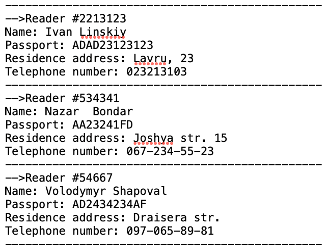
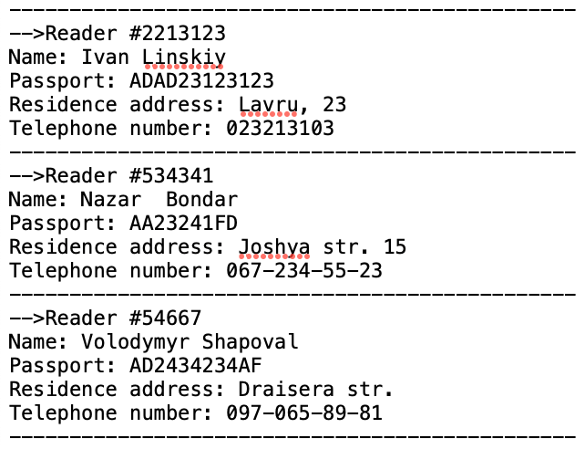

Лабораторна робота № 3 >>> Аналіз достовірності результатів
Реєстрація
 

Як можемо помітити, всі дані, що вводяться через консоль, коректно та в правильній формі записуються до текстового файлу.
Додавання книги

Якщо ми коректно ввели всі дані про книгу через нашу консоль, то вони будуть записані до текстового файлу. В цьому ми можемо ще раз впевнитись завдяки двом скріншотам.
Отримання книги
Як ми можемо побачити, тут ще раз підтверджується правильність та доречність використання методу лінійного пошуку книги за символами. Користувач ввів лише частину назви книги, а йому вивелася повна назва з усіма даними. Після підтвердження правильності вибраної книги, тег з іменем та прізвищем користувача буде успішно додано, як в консолі, так і в текстовому файлі.
Отримання інформації про книгу
Отримання інформації про бібліотеку

Тут ми бачемо майже всі ті самі дії, що й в попередньому завданні. Відсутня лише функція додавання тегу з даними читача.
Читання контенту
Це завдання є звичайним, оскільки ми зробили читанням нашого контенту один приклад з минулої лабораторної роботи. Фактично тут можна винести такі знання: якщо ми маємо певний файл з певними даними; якщо ми маємо файл з функціоналом, який описаний у великому масштабі, то немає потреби копіювати або переписувати текст в окремий файл. Достатньо просто зробити з ним зв’язку. Однак, оскільки завдання з минулої лабораторної роботи було абсолютно невеликим, я вирішив скористатися методом створення нового класу.
Вирахування зменшення ризику захворювання мозку
Вирахування збільшення IQ в залежності від періодичності читання
Ідентифікація студента